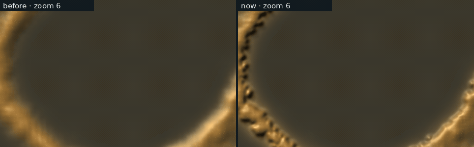
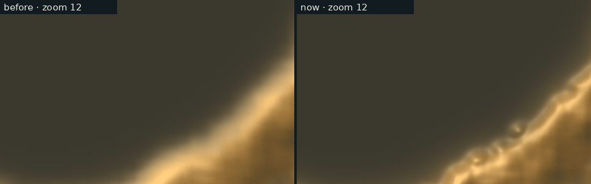
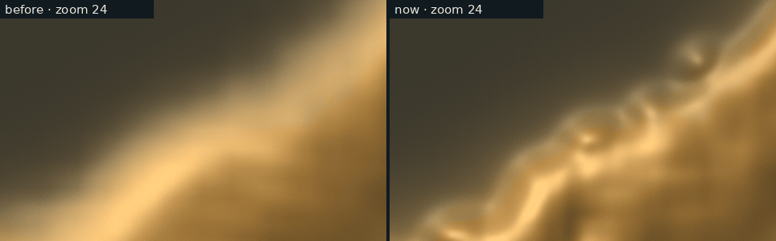
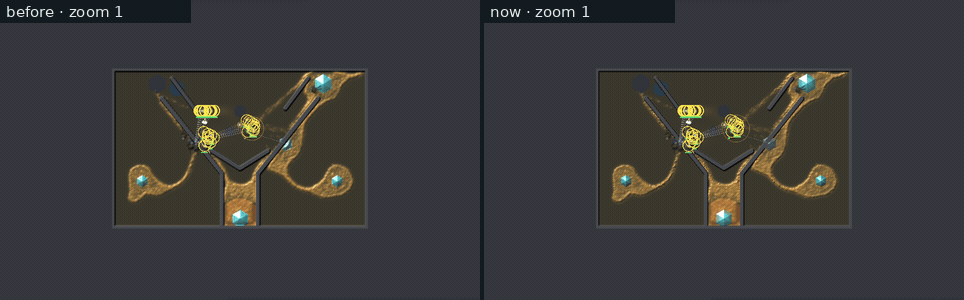
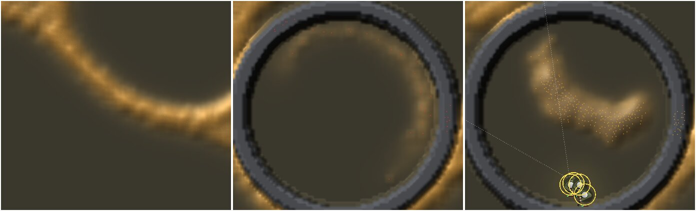
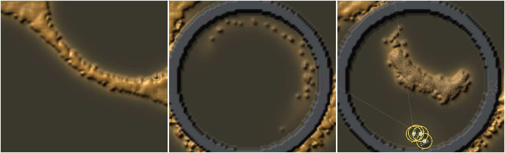
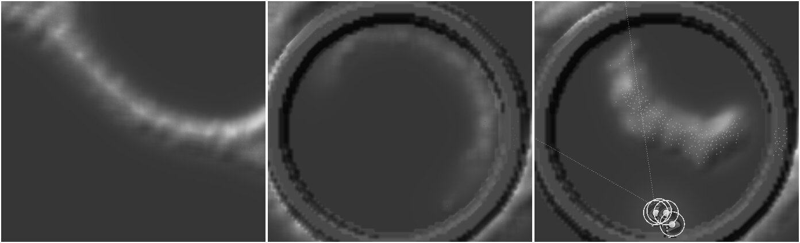
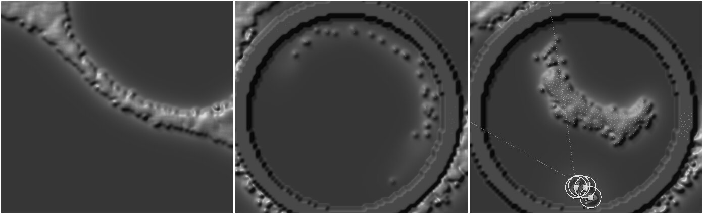

<title>Sharp Slime</title>
<meta name="claude:viewport-fit-sides" content="cover">
<link rel="preconnect" href="https://fonts.googleapis.com">
<link rel="stylesheet" href="https://fonts.googleapis.com/css2?family=Inter:wght@400;600&family=Space+Grotesk:wght@500;700&display=swap">
<style>
/* Plan C8 (2026-11-14, the graphics thread): panic and withering drawn from
   each walker's news of food. Same style as the Scared Mould page, whose
   scenes it re-films: mould amber, crystal cyan, the bolt's red. Labelled,
   not blind: it shows a feature on and off, not a pick between looks. */
:root {
  --bg: #f3f5f6; --fg: #182024; --muted: #56646b; --line: #d5dde0;
  --panel: #ffffff; --amber: #a86a12; --cyan: #127a93; --red: #b2402a; --ash: #6f6a64;
  --display: "Space Grotesk", "Segoe UI", system-ui, sans-serif;
  --body: "Inter", "Segoe UI", system-ui, sans-serif;
}
@media (prefers-color-scheme: dark) { :root:not([data-theme="light"]) {
  --bg: #0b1114; --fg: #e3eaec; --muted: #93a3aa; --line: #22303a;
  --panel: #111a1f; --amber: #e2a95a; --cyan: #8cebff; --red: #f08a72; --ash: #b3aca4; color-scheme: dark } }
:root[data-theme="dark"] {
  --bg: #0b1114; --fg: #e3eaec; --muted: #93a3aa; --line: #22303a;
  --panel: #111a1f; --amber: #e2a95a; --cyan: #8cebff; --red: #f08a72; --ash: #b3aca4; color-scheme: dark }
body { background: var(--bg); color: var(--fg); font-family: var(--body); line-height: 1.55;
  padding-left: max(16px, env(safe-area-inset-left, 0px)); padding-right: max(16px, env(safe-area-inset-right, 0px)); padding-block: 28px 48px; }
main { max-width: 1180px; margin: 0 auto; display: grid; gap: 34px; }
h1, h2 { font-family: var(--display); text-wrap: balance; margin: 0; }
h1 { font-size: 1.9rem; }
h2 { font-size: 1.2rem; }
p { margin: 0; max-width: 68ch; }
.lede { color: var(--muted); }
header, section { display: grid; gap: 12px; }
.hero { display: grid; grid-template-columns: minmax(0, 520px) minmax(0, 1fr); gap: 24px; align-items: start; }
@media (max-width: 760px) { .hero { grid-template-columns: 1fr; } }
.pair { display: grid; grid-template-columns: repeat(auto-fit, minmax(280px, 1fr)); gap: 20px; }
figure { margin: 0; display: grid; gap: 8px; min-width: 0; align-content: start; }
figure img, figure video { width: 100%; max-width: 100%; border-radius: 4px; border: 1px solid var(--line); display: block; background: #111a1f; }
figcaption { font-size: 0.9rem; color: var(--muted); }
.tag { font-family: var(--display); font-size: 0.85rem; letter-spacing: 0.06em; text-transform: uppercase; color: var(--amber); }
.tag.on { color: var(--red); }
.key { display: grid; gap: 8px; margin: 0; padding: 0; list-style: none; }
.key li { display: grid; grid-template-columns: 18px 1fr; gap: 10px; align-items: start; }
.sw { width: 14px; height: 14px; border-radius: 3px; margin-top: 4px; border: 1px solid var(--line); }
.scroll { overflow-x: auto; min-width: 0; }
table { border-collapse: collapse; font-variant-numeric: tabular-nums; font-size: 0.9rem; min-width: 300px; }
th, td { text-align: right; padding: 5px 12px 5px 0; border-bottom: 1px solid var(--line); }
th:first-child, td:first-child { text-align: left; }
th { font-family: var(--display); font-weight: 500; color: var(--muted); font-size: 0.78rem; letter-spacing: 0.04em; text-transform: uppercase; }
.note { color: var(--muted); font-size: 0.9rem; }
code { font-size: 0.9em; }
</style>
<main>
  <header>
    <span class="tag">Your playtest · "The slime looks very blurry/out of focus. The crystals are pixelated."</span>
    <h1>A sharp slime and crisp crystals</h1>
    <p class="lede">The same moment of the same game, with the old drawing on the left and the new one on the right. Both runs are the same simulation: the counts in every log line match. Frames are every 0.1 game seconds, 2:30 to 2:33, played at 10 a second, shown 1:1 (one screen pixel per pixel).</p>
  </header>

  <section>
    <h2>Why it was blurry</h2>
    <p>The body's thickness was one number per cell, counted from the walkers on the 5 × 5 cells around it. It was blended between cells, and its slope was sampled 1.5 cells apart, so an edge spread over about 5 cells: 30 pixels at zoom 6 and over 100 at zoom 24. Each crystal stood in the same grid of cells, so its slanted sides were staircases.</p>
    <p>Now the walkers are counted where they actually are, on a grid up to 2 × 2 per cell. Near the edge they're summed with a tight Gaussian, so the edge is as sharp as the walkers make it. In the dense body they're summed with a wide one, so the body reads as one wet sheet, with grain only where walkers are sparse. Height and colour are rebuilt smoothly, so no cell squares show. Each crystal is now its exact hexagon, with flat faces and the edge antialiased to a pixel.</p>
  </section>

  <section>
    <h2>Zoom 6 (the playing zoom)</h2>
    <figure></figure>
  </section>
  <section>
    <h2>Zoom 12</h2>
    <figure></figure>
  </section>
  <section>
    <h2>Zoom 24 (closest)</h2>
    <figure></figure>
    <p class="note">The closest zoom is still the softest, because the detail stops at the walkers. A body has about one walker per cell, and each cell is 24 pixels here. The edge is now clear, but inside the body there's no finer data to show.</p>
  </section>
  <section>
    <h2>Zoom 1 (the whole map)</h2>
    <figure></figure>
    <p class="note">At zoom 1 a cell is a pixel, so the two look alike, as they should.</p>
  </section>

  <section>
    <h2>Can you still read the slime's state? In colour and in grey</h2>
    <p>Three frames at zoom 6, each before and now. First the fed body (2:29). Then a piece 30 s after a ring cut it off, with 27 of its 232 walkers left, gone ashen and thin. Then a cut piece leaning at four soldiers 7.5 s after its cut, with amber specks.</p>
    <figure><figcaption>Before</figcaption></figure>
    <figure><figcaption>Now</figcaption></figure>
    <figure><figcaption>Before, grey</figcaption></figure>
    <figure><figcaption>Now, grey</figcaption></figure>
    <p class="note">In grey, the starving piece reads as scattered beads rather than a faint smear. The amber lean is still thin at zoom 6. A brighter, denser front for the lean is the next step on this thread.</p>
  </section>

  <section>
    <h2>Cost</h2>
    <p>On software Vulkan (llvmpipe), with 20 game seconds of the farm hand at zoom 4 and the two builds alternated, the median frame went from 31.9 and 31.7 ms to 37.5 and 37.5 ms. That's about 18% more on a CPU renderer. The first version cost 44 ms. Sampling the slope three times instead of five, and separable weights for the walker sums, brought it down. The 1070 timing waits for the PC.</p>
    <p class="note">Clips: <code>larder-world look=DIR hand=farm seed=1 map=fork centre=420,232,ZOOM at=150,150.1,...,153</code> on llvmpipe, before and after builds of the same main. Strip: <code>cut=150,365,240,32 centre=365,238,6</code> (with <code>cutsquad=365,264,150,4</code> for the lean). Logs in <code>Reports/sharp-slime-2026-11-14/raw/</code>.</p>
  </section>
</main>
